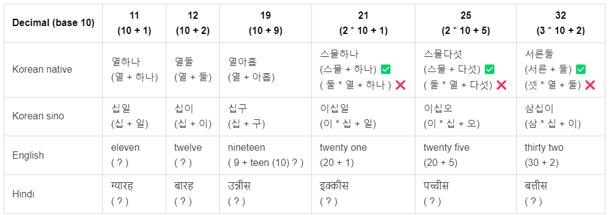

Decimal (base 10): 1, 2, 3, 4, 5, 6, 7, 8, 9, 10, 20, 30 …
Korean native: 하나, 둘, 셋, 넷, 다섯, 여섯, 일곱, 여덟, 아홉, 열, 스물, 서른 …
Korean sino: 일, 이, 삼, 사, 오, 육, 칠, 팔, 구, 십, 이십, 삼십 …
English: one, two, three, four, five, six, seven, eight, nine, ten, twenty, thirty …
Hindi: एक, दो, तीन, चार, पाँच, छह, सात, आठ, नौ, दस, बीस, तीस …
Let’s form some numbers in all of these languages.
| Decimal (base 10) | 11(10 + 1) | 12(10 + 2) | 19(10 + 9) | 21(2 * 10 + 1) | 25(2 * 10 + 5) | 32(3 * 10 + 2) |
|---|---|---|---|---|---|---|
| Korean native | 열하나(열 + 하나) | 열둘(열 + 둘) | 열아홉(열 + 아홉) | 스물하나(스물 + 하나) ✅( 둘 * 열 + 하나 ) ❌ | 스물다섯(스물 + 다섯) ✅( 둘 * 열 + 다섯) ❌ | 서른둘(서른 + 둘) ✅(셋 * 열 + 둘) ❌ |
| Korean sino | 십일(십 + 일) | 십이(십 + 이) | 십구(십 + 구) | 이십일(이 * 십 + 일) | 이십오(이 * 십 + 오) | 삼십이(삼 * 십 + 이) |
| English | eleven( ? ) | twelve( ? ) | nineteen( 9 + teen (10) ? ) | twenty one(20 + 1) | twenty five(20 + 5) | thirty two(30 + 2) |
| Hindi | ग्यारह( ? ) | बारह( ? ) | उन्नीस( ? ) | इक्कीस( ? ) | पच्चीस( ? ) | बत्तीस( ? ) |
If the table above doesn’t render properly, please look at this image instead -

For now, let’s keep the discussion limited to only the numbers less than 100.
You must have surely noticed some patterns above! So, which one do you think is the most easy one to learn?
At the start of this article, the symbols for representation of numbers from 1 to 10, 20 and 30 are shown. And since we know the mathematics of multiplication and addition, we can easily form the ordinal decimal number by multiplying the base value (10) with an appropriate number and adding an appropriate number to the result.
For example,
To form the number 11, we must do it like
1 * 10 + 1
To form the number 19, we must do it like
1 * 10 + 9
However, to form the number 32, we have to think of 30 first, which is three times as much as ten ( 3 * 10 ), and then there is two more ( + 2)
32 = 3 * 10 + 2
If we are to map this concept to Korean sino numbers, it is very easily done, as shown in the table above.
To form 32 in sino-Korean, we have to think that it is 삼 times as much as 십 (삼 * 십), and then there is 이 more ( + 이)
32 = 삼 * 십 + 이 = 삼십이
그런데, however, native Korean numbers do not “exactly” follow this scheme. They only follow the addition part, and not the multiplication part.
To form the number 32, we could have thought that 32 is at least 셋 times more than 열 (셋 * 열), and then there is 둘 more ( + 둘).
We would then have,
32 = 셋 * 열 + 둘 which is NOT the case.
Native Korean numbers introduce another set of words for multiples of 10 (for 20 it is 스물, and for 30 it is 서른). So, we have to use these new words to refer to multiples of 10.
In our case of 32, this means, 서른 and two more (+ 둘). Notice that the addition part is still the same, but the quantity to which it gets added to has a “changed” name.
Thus, 32 = 서른 + 둘 = 서른둘
In a similar way, the English language numbers also follow only the addition part (number 20), and not the multiplication part.
For example,
32 = thirty (a new word) + two more = thirty two
This could have been “three times ten and two more” = “three ten two” (but yeah, that’s gibberish)
Well, now, you must have figured out why we must express honour to the people who know counting numbers in Hindi (of course after 30 😉). And if you are still feeling adventurous, try to answer this question (as was asked to me by my friend) -
Which among अठहत्तर and सत्तासी is the greater one?
But, I think there is another pattern in Hindi numbers which does not fall under the category we discussed in this article. Maybe you will tell me?